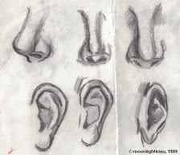

On Classical Architectures
I was told a story once.
It is about the way Da Vinci used to draw. Well I will expose it in this post and how it is related to architectural patterns.
On da Vinci drawing strategy
Well I do not know if that is true, but I was once told that da Vinci could see a person for a couple of seconds and he was then able to draw a picture of him/her.
Basically the idea is that da Vinci worked through patterns. He defined a set of noses, ears, lips etc.
Something similar to this:
When he was looking at a person he could then make a quick mapping to the different types in his set and draw the person.
The idea is now to do the same for IT architectures. You have to be able to think in patterns and combine them.
So the idea is to check a piece of software or have a conversation about a technical solution and map it to one of the existing patterns in your set.
You will be able to easily abstract and get the general picture in such a way.
Architectural Patterns
I found this patterns here. Note that the application of such patterns is very bounded by different domains. You even can embedd one into the other at different abstract levels.
So it is not that the patterns are constantly in competition with each other. They are often complementary and act on different levels.
Layered Patterns
This is the most classical pattern. Here each layer is responsible and implements part of the solution.
Each layer operates on the layer below it and it is abstracted from the entire logic of the layers below.
One of the most classic examples of such an architecture is how the networks operate. You recall there: physical, data, network, transport, presentation.
Another classical layered architecture that was used very much in IT in the past is the following:
3-Layer
This is composed of:
- presentation layer: be it web-browser, app etc.
-
application layer: in this tier, information collected in the presentation tier is processed. It acts as the middle layer between the data layer and the presentation layer.
The presentation layer should never directly access the data layer and is abstracted from it.
- data layer: this is the persistence layer, where you store the data etc.
MVC Pattern
You can read more about these patterns here.
On Model 2 Architecture, Servlets and JSP
So basically this is one of the standard architectures for Java to communicate with clients and serve content from web-servers.

Basically this is one of the standards. You have your servlet that handles the server side communication. It instantiate a Java Bean that is responsible of fetching the information from the database.
Finally the information is rendered via JSP - which are a high-level abstraction of Java servlets. They allow Java code and certain predefined actions to be interleaved with static web markup content, such as HTML. The resulting page is compiled and executed on the server to deliver a document.
The architecture is a model-view-controller architecture. The
view is the JSP, the controller is the Servlet and the model
is given by JavaBeans.
This was never your bread and butter but this is what you were also doing at the end in your Flask project. There you could as well embedd dynamic information in your html pages. I never went into the details of it as I was busy running the project. But that should have been the JSP equivalent.
Difference Layered and MVC
So note that MVC is a pattern very specific to front-end and front-end frameworks.
Note the follwoing entry from here that makes as well the point:
At first glance, the three tiers may seem similar to the model-view-controller (MVC) concept; however, topologically they are different. A fundamental rule in a three tier architecture is the client tier never communicates directly with the data tier; in a three-tier model all communication must pass through the middle tier. Conceptually the three-tier architecture is linear. However, the [model-view-controller] MVC architecture is triangular: the view sends updates to the controller, the controller updates the model, and the view gets updated directly from the model.
So this is a true difference among the two. In any case, thinking in structures it is clear that the main difference lies in the fact that the two are fundamentally different, i.e. the Layered architecture is used across the enterprise application.
The MVC pattern is used specifically for the front-end.
Broker Pattern
This is the most classical stuff with queues, pub/subscribe, streams etc.
Typical software is: Apache ActiveMQ, Apache Kafka, RabbitMQ and JBoss Messaging.
You have as well a tons of specialized solutions for it in the cloud.
Event Bus Pattern
This is in the spirit of the broker pattern. In fact it is the implementation of one or multiple brokers to implement the bus of choice that connects the events across applications.
You can read of 4 different ways to do that in here.
This is an important concept as many companies have very fragmented applications that need to communicate with each other.
This is the usual architectural pattern through which they try to get to the goal. Often it fails due to the complexity of connecting multiple applications operating at very different logical levels with different technologies involved.
Peer To Peer Pattern
This is the typical meshes used in file-sharing applications - like emule etc.- , blockchain and Co.
As there is no central authority you can rely on, the key mechanism these protocols works on is game theory.
If you fail the game-theory component of it you are screwed.
This is in sharp contrast with the classical client-server architecture.
Note that you can use the broker pattern both with this p2p as well in the case of client-server architectures.
Pipe-Filter Pattern
This is the most classical architecture in machine layer.
This is what you do when you create the relevant pipelines.
It is at the core of the application layer and much used in data engineering as well.
Master-Slave
This is extensively used in databases. Check at your notes of Hadoop.
That was especially useful. There the entire master-slave architecture is core and you have multiple notes explaining it at the logic level.
TODO Blackboard Pattern
Do the notes in here. it is the thing that you discussed about in the distributed systems class.
TODO Interpreter Pattern
to search on the web the proper thing for it.